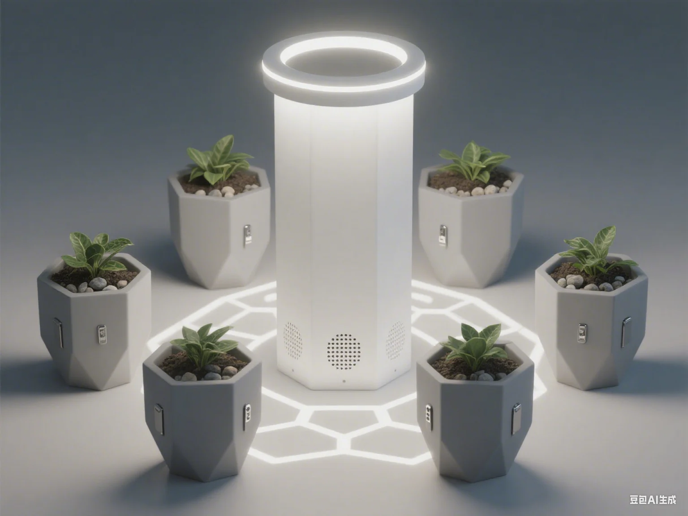

产品实践 / 智能硬件
智能多肉
生长装置
把桌面植物养护，
变成一次完整的产品实践。
从环境监测与自动浇水的需求出发，划定首代 MVP 范围，推进硬件选型、传感器采集、水泵控制与整机联调。
- 我的角色
- 项目负责人
- 参与环节
- 需求分析、开发、集成验证
- 已有成果
- 首代 MVP 样机与调控闭环
阅读项目记录
围绕使用场景梳理核心功能，兼顾技术可行性，明确首代开发范围。
样机已集成温湿度、光照监测及水泵控制，并完成系统集成、功能调试与整机验证。
上方图片用于呈现产品概念，不代表已交付样机的实物外观。